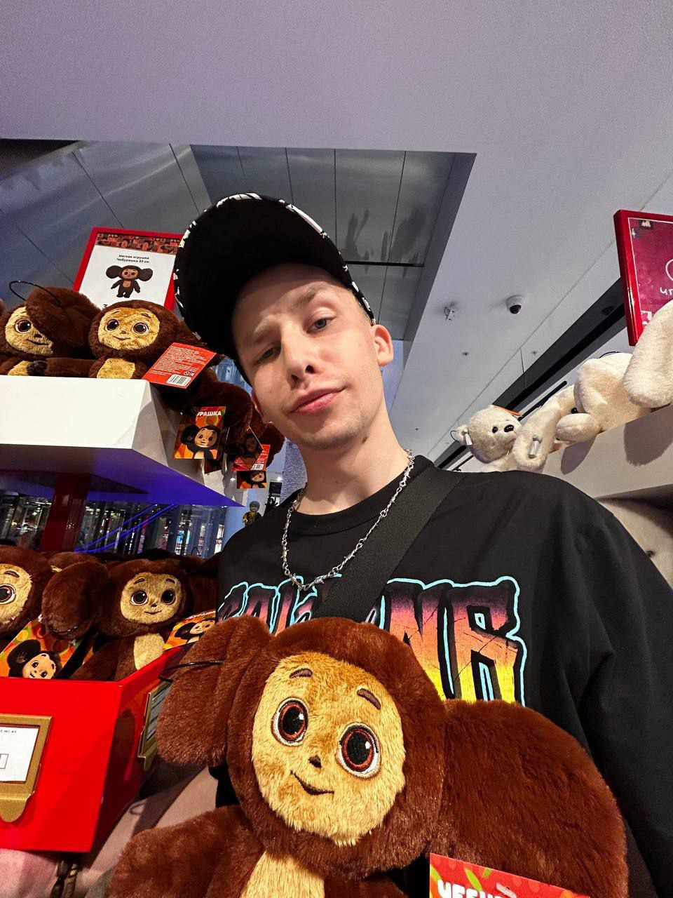

О разработчике
Информация о разработчике
О себе
Я Стронов Максим Александрович, мне 18 лет.
Обучаюсь в Московском Колледже Информационных Технологий .
Изучаю языки программирования HTML,C++,SQL.
Занимаюсь танцами и плаванием.
Профессиональные навыки
HTML - 2/10
C++ - 2/10
SQL - 2/10
Обратная связь:
Вконтакте Телеграм Телеграм канал